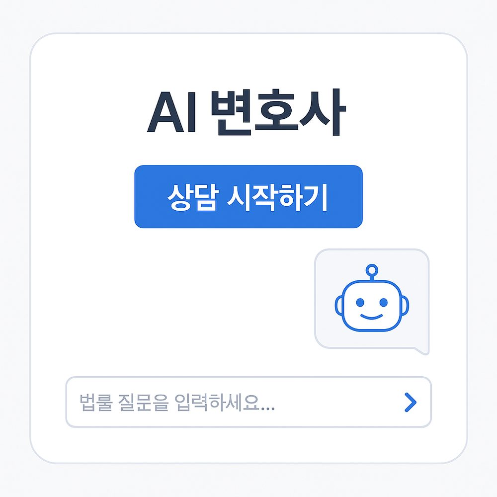

LLM Application
프롬프트 설계, 모델 선택, 스트리밍 응답 처리, 실패 유형 분석까지 서비스를 만드는 관점에서 다뤄봤습니다.
- Ollama / Gemini 백엔드 실험
- 오픈소스 음성 대화 시스템 확장
- 출력 정제·가드레일 구현
SELECTED WORK

01 · DOMAIN FINE-TUNING
법률 질의응답에 맞춘 Llama 3.1 8B 파인튜닝과 Gradio 시연 서비스.
02 · LLM APPLICATION
Open-LLM-VTuber를 확장해 로컬 모델의 정체성 역전, 한자 혼입, 반복 발화에 대응했습니다.

03 · AI SERVICE ENGINEERING
시세·뉴스와 Gemini 판단을 연결한 Windows 데스크톱 앱입니다.
ABOUT THE WORK
대표작은 파인튜닝, 로컬 LLM 실험, AI 서비스 구현으로 구성했습니다. 로컬에서 돌아가는 실시간 음성 AI부터 법률 도메인 파인튜닝 모델까지, 실험과 서비스 구현을 이어온 작업들입니다. 모델을 돌리는 것 자체보다, 어디서 왜 실패하는지 찾고 고치는 데 시간을 더 많이 썼습니다.
CORE SKILLS
프롬프트 설계, 모델 선택, 스트리밍 응답 처리, 실패 유형 분석까지 서비스를 만드는 관점에서 다뤄봤습니다.
LoRA로 파인튜닝하고 데이터를 정제해서, 모델이 특정 도메인에 더 잘 맞도록 만들어본 경험이 있습니다.
API 서버, 웹 인터페이스, 모델 학습 파이프라인까지 직접 연결해봤습니다.
PROFILE